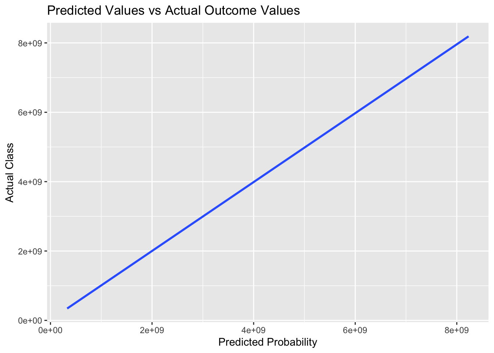
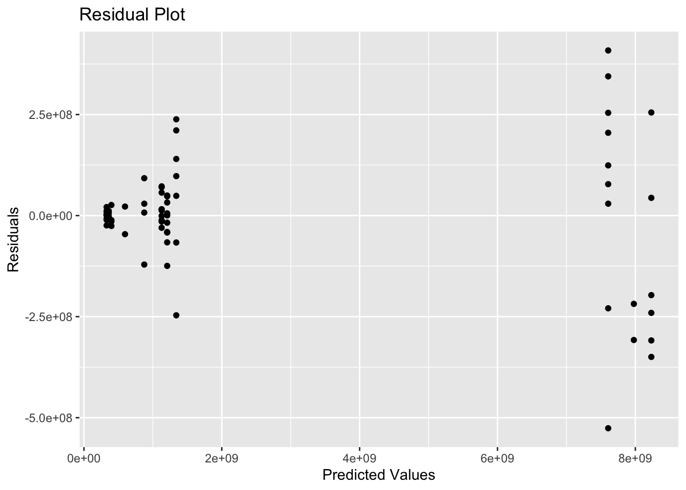

Description of data: “In this project, they synthesize an analysis-ready data set that tracks cage-free hens and the supply of cage-free eggs relative to the overall numbers of hens and table eggs in the United States. The data set is based on reports produced by the United States Department of Agriculture (USDA), which are published weekly or monthly. They supplement these data with definitions and a taxonomy of egg products drawn from USDA and industry publications. The data include flock size (both absolute and relative) and egg production of cage-free hens as well as all table-egg-laying hens in the US, collected to understand the impact of the industry’s cage-free transition on hens. Data coverage ranges from December 2007 to February 2021.”
Library
# data preplibrary(dplyr)
Attaching package: 'dplyr'
The following objects are masked from 'package:stats':
filter, lag
The following objects are masked from 'package:base':
intersect, setdiff, setequal, union
spc_tbl_ [96 × 4] (S3: spec_tbl_df/tbl_df/tbl/data.frame)
$ observed_month: Date[1:96], format: "2007-12-31" "2008-12-31" ...
$ percent_hens : num [1:96] 3.2 3.5 3.6 4.4 5.4 6 5.9 5.7 8.6 9.9 ...
$ percent_eggs : num [1:96] NA NA NA NA NA NA NA NA NA NA ...
$ source : chr [1:96] "Egg-Markets-Overview-2019-10-19.pdf" "Egg-Markets-Overview-2019-10-19.pdf" "Egg-Markets-Overview-2019-10-19.pdf" "Egg-Markets-Overview-2019-10-19.pdf" ...
- attr(*, "spec")=
.. cols(
.. observed_month = col_date(format = ""),
.. percent_hens = col_double(),
.. percent_eggs = col_double(),
.. source = col_character()
.. )
- attr(*, "problems")=<externalptr>
Summarizing continuous and categorical variables
Egg Production
#Taking a look at product type table(eggproduction$prod_type)
hatching eggs table eggs
55 165
summary(eggproduction$prod_type)
Length Class Mode
220 character character
Strong majority of table eggs compared to hatching eggs
#Taking a look at product processtable(eggproduction$prod_process)
all cage-free (non-organic) cage-free (organic)
110 55 55
summary(eggproduction$prod_process)
Length Class Mode
220 character character
There is a majority of “all” which indicates cage-free and conventional housing. While the numbers for cage-free(non-organic) and cage-free (organic) are the same.
#Number of hens summary(eggproduction$n_hens)
Min. 1st Qu. Median Mean 3rd Qu. Max.
13500000 17284500 59939500 110839873 125539250 341166000
#Number of eggssummary(eggproduction$n_eggs)
Min. 1st Qu. Median Mean 3rd Qu. Max.
2.981e+08 4.240e+08 1.155e+09 2.607e+09 2.963e+09 8.601e+09
#Source for egg productiontable(eggproduction$source)
#percent hens:observed or computed percentage of cage-free hens relative to all table-egg-laying henssummary(cagefreepercentages$percent_hens)
Min. 1st Qu. Median Mean 3rd Qu. Max.
3.20 13.46 17.30 17.95 23.46 29.20
When looking directly at the data there’s an obvious increase of cage-free hens relative to all table-egg-laying hens.
summary(cagefreepercentages$observed_month)
Min. 1st Qu. Median Mean 3rd Qu. Max.
"2007-12-31" "2017-05-23" "2018-11-15" "2018-05-12" "2020-02-28" "2021-02-28"
The increase of cage free hens raltive to table all table-egg-laying hens increases from 2007 until 2021.
#percent eggs: computed percentage of cage-free eggs relative to all table eggs,This variable is not available for data sourced from the Egg Markets Overview reportsummary(cagefreepercentages$percent_eggs)
Min. 1st Qu. Median Mean 3rd Qu. Max. NA's
9.557 14.521 16.235 17.095 19.460 24.546 42
There is an increase in cage-free eggs relative to all table eggs which could be due to the increase of cage-free hens relative to all table-egg-laying hens. There are some NA values here that I will have to deal with.
#Source for cage freetable(cagefreepercentages$source)
Dealing with the missing for cagefreepercentages$percent_eggs
There are 42/96 (43.75%) missing values in the variable percent_eggs within the cagefreepercentages data set. As a result, I am going to get rid of this variable.
Determing a research question and an outcome and predictors as well
Research Question: There is a noticeable decrease in total egg production from 2016 to 2021. Does the decrease in total egg production have something to do with the cage-free prodcution method?
Outcome: n_eggs
Predictors: n_hens, prod_type and prod_process
Fitting a Linear Regression Model and Using 4 ML Methods to Evaluate the Performance
Doing 5-fold cross validation with 5 repeats and body temperature as the strata
CV_fold =vfold_cv(train_data, v =5, repeats =5, strata = n_eggs) #
Creating a recipe and applying to the training data
recipe <-recipe(n_eggs ~ n_hens + prod_type + prod_process, data = train_data) %>%step_dummy(all_nominal(), one_hot =TRUE) #In this code, we create a recipe using step_dummy to preprocess the data and convert the categorical predictors into numeric predictors
Creating a mean null model and evaluating the model for both the training data and test data
mean_null_model <-function(eggproduction) { outcome <-mean(eggproduction$n_eggs) prediction <-rep(outcome, nrow(eggproduction))return(prediction)}#using model to make predictions based on the training data and test datatrain_pred <-mean_null_model(train_data)test_pred <-mean_null_model(test_data)#calculating rmse for the model fit to training data train_rmse <-rmse(train_data$n_eggs, train_pred)test_rmse <-rmse(test_data$n_eggs, test_pred)#taking a look at the rmse for both training and test datatrain_rmse
[1] 3090036138
test_rmse
[1] 3042572982
Fitting a Tree Model
Tuning Hyperparameters
#tuning: the process of estimating the best values for these values by training many models on resampled data sets and exploring how well all these models performtune_spec <-decision_tree(cost_complexity =tune(),tree_depth =tune() ) %>%set_engine("rpart") %>%set_mode("regression")
══ Workflow ════════════════════════════════════════════════════════════════════
Preprocessor: Recipe
Model: decision_tree()
── Preprocessor ────────────────────────────────────────────────────────────────
1 Recipe Step
• step_dummy()
── Model ───────────────────────────────────────────────────────────────────────
Decision Tree Model Specification (regression)
Main Arguments:
cost_complexity = 1e-10
tree_depth = 8
Computational engine: rpart
Evaluate the final fit for the tree model
final_fit <- final_wf %>%last_fit(data_split) final_fit_metrics <- final_fit %>%collect_metrics()#final fit metricsfinal_fit_metrics
# A tibble: 2 × 4
.metric .estimator .estimate .config
<chr> <chr> <dbl> <chr>
1 rmse standard 150521954. Preprocessor1_Model1
2 rsq standard 0.998 Preprocessor1_Model1
#creating a tibble for predicted values of modelpredictions = final_fit %>% collect_predictions#plotting model predictions vs actual outcome plot1 = final_fit %>% collect_predictions %>%ggplot(aes(x = .pred, y = n_eggs)) +geom_smooth(method ="lm", se =FALSE) +xlab("Predicted Probability") +ylab("Actual Class") +ggtitle("Predicted Values vs Actual Outcome Values")plot1
`geom_smooth()` using formula = 'y ~ x'
#plotting the residuals residuals = predictions$n_eggs - predictions$.pred#creating a residual data frame residuals_df =data.frame(n_eggs = predictions$n_eggs, Predictions = predictions$.pred, Residuals = residuals)# Create a scatter plot with ggplot for residuals ggplot(residuals_df, aes(x = Predictions , y = Residuals)) +geom_point() +xlab("Predicted values") +ylab("Residuals") +ggtitle("Residual Plot")
# A tibble: 2 × 4
.metric .estimator .estimate .config
<chr> <chr> <dbl> <chr>
1 rmse standard 117659331. Preprocessor1_Model1
2 rsq standard 0.999 Preprocessor1_Model1
#creating a tibble for predicted values of modelpredictions2 = final_fit2 %>% collect_predictions#plotting model predictions vs actual outcome plot2 = final_fit2 %>% collect_predictions %>%ggplot(aes(x = .pred, y = n_eggs)) +geom_smooth(method ="lm", se =FALSE) +xlab("Predicted Probability") +ylab("Actual Class") +ggtitle("Predicted Values vs Actual Outcome Values")plot1
`geom_smooth()` using formula = 'y ~ x'

#plotting the residuals residuals2 = predictions$n_eggs - predictions$.pred#creating a residual data frame residuals_df2 =data.frame(n_eggs = predictions$n_eggs, Predictions = predictions$.pred, Residuals = residuals)# Create a scatter plot with ggplot for residuals ggplot(residuals_df2, aes(x = Predictions , y = Residuals)) +geom_point() +xlab("Predicted Values") +ylab("Residuals") +ggtitle("Residual Plot")

Fitting for random forest model
Building a model
rf_mod =rand_forest(mtry =tune(), min_n =tune(), trees =1000) %>%set_engine("ranger") %>%set_mode("regression")
# A tibble: 2 × 4
.metric .estimator .estimate .config
<chr> <chr> <dbl> <chr>
1 rmse standard 137526267. Preprocessor1_Model1
2 rsq standard 0.998 Preprocessor1_Model1
#creating a tibble for predicted values of modelpredictions3 = final_fit3 %>% collect_predictions#plotting model predictions vs actual outcome plot3 = final_fit3 %>% collect_predictions %>%ggplot(aes(x = .pred, y = n_eggs)) +geom_smooth(method ="lm", se =FALSE) +xlab("Predicted Probability") +ylab("Actual Class") +ggtitle("Predicted Values vs Actual Outcome Values")plot1
`geom_smooth()` using formula = 'y ~ x'
#plotting the residuals residuals3 = predictions$n_eggs - predictions$.pred#creating a residual data frame residuals_df3 =data.frame(n_eggs = predictions$n_eggs, Predictions = predictions$.pred, Residuals = residuals)# Create a scatter plot with ggplot for residuals ggplot(residuals_df3, aes(x = Predictions , y = Residuals)) +geom_point() +xlab("Predicted Values") +ylab("Residuals") +ggtitle("Residual Plot")
Discussion
All the models had high RMSE values indicating the models were not overly accurate when predicting the outcome variable of the number of eggs. I do not believe any outliers were to blame for the high RMSE values as there did not appear to be any obvious outlier when examining the variables. The reported R^2 values of the models were high, as a result this metric was used to determine the best fit for this exercise. I do understand that a high R^2 value does not necessarily indicate the best model. In this exercise the high R^2 values indicated that the models were able to explain a large percentage of variation in the outcome variable, but the high RMSE values indicated that the models were not too accurate when predicting values for the outcome.
The following are the metrics I intend to compare for each model:
The null model had an RMSE value of 3.1e+09 for the train data and 3.0e+09 for the test data
The best tree model produced an RMSE value of 1.5e+08 and an R^2 value of 9.98e-01.
The LASSO Model produced an RMSE value of 1.17e+08 and an R^2 value of 9.99e-01.
The random forest model produced an RMSE value of 1.46e+08 and an R^2 value of 9.98e-01.
Given these RMSE and R^2 values the best overall model is the LASSO Model. The LASSO model reported the highest R^2 value indicating the model accounts for very high percentage of variability of the outcome variable, number of eggs. The RMSE of 1.17e+08 is high but is the lowest out of the three other models. It remains unclear to me why the RMSE values are that high. From my understanding, the accuracy of each model could be better. Another note to take into account is that the value of the outcome variable were large numbers. When looking back at the minimum and maximum of the n_eggs variable they were found to be 2.98e+08 and 8.6e+09. Could the fact that the models are working with an outcome variable with such large numbers be a reason the RMSE values are so high. In addition, possibly the predictors I chose to model could be an issue. These are reasons that I will reconsider and attempt to explore exactly what the reason behind the large RMSE values are.